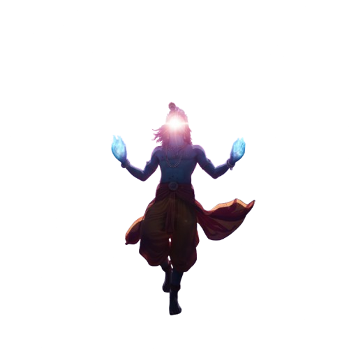
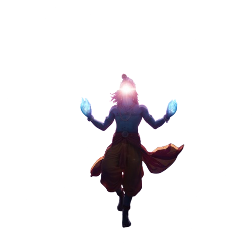

Creative
Developer
Between कला and code, I build stories
A creative soul/आत्मा who designs with purpose and codes with heartfelt. I want every interface, every scroll another story told in pixels and rhythm just like our ब्रह्मांड / universe breeding art in it's smallest forms
There’s a strange peace in creating — in watching logic find rhythm and rhythm find meaning. Maybe that’s why I build. Because every piece of code, every design, every frame I capture feels like a conversation with something divine. I was told अंतः अस्ति प्रारंभः — the end is the beginning. Maybe that’s why I never stop learning, only rewriting my stories in new forms.
Projects
Obys Angency Clone
RAyBan UI Clone
Exo Ape Clone
Get In Touch
Got an idea that's waiting to come alive? Let's build it together. Whether you're a designer, developer, or a creative studio, I'd love to collaborate and turn your thoughts into something real.
If you're a digital agency or company looking for a designer, developer who cares about details, motion, and meaningful design. I'm always open to exciting opportunities.
You can reach me through any of my socials below or drop me a message. I'd be happy to connect, collaborate, or just chat about new ideas.
Creative
Developer
Between कला and code, I build stories
A creative soul/आत्मा who designs with purpose and codes with heartfelt.
I want every interface, every scroll another story told in pixels and rhythm just like our ब्रह्मांड / universe breeding art in it's smallest forms
There’s a strange peace in creating - in watching logic find rhythm and rhythm find meaning. Maybe that’s why I build. Because every piece of code, every design, every frame I capture feels like a conversation with something divine. I was told अंतः अस्ति प्रारंभः - the end is the beginning. Maybe that’s why I never stop learning, only rewriting my stories in new forms.
Projects
 Obys Agency Clone
RayBan UI Clone
Exo Ape Clone
Obys Agency Clone
RayBan UI Clone
Exo Ape CloneGet In Touch
Got an idea that's waiting to come alive? Let's build it together. Whether you're a designer, developer, or a creative studio, I'd love to collaborate and turn your thoughts into something real.
If you're a digital agency or company looking for a designer, developer who cares about details, motion, and meaningful design. I'm always open to exciting opportunities.
You can reach me through any of my socials below or drop me a message. I'd be happy to connect, collaborate, or just chat about new ideas.